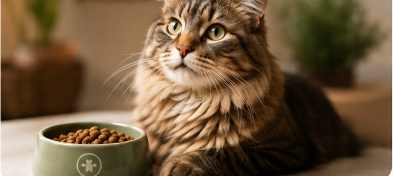
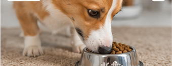
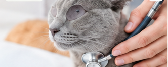
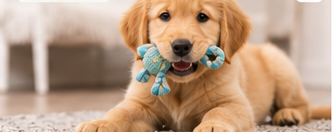
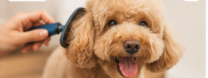

Раздел petshop.ru
Все статьи о заботе о питомцах
Страница, на которую ведет кнопка “Смотреть все статьи”. Пользователь может открыть материал из сетки или вернуться к предыдущей статье через хлебные крошки.

Как выбрать ветеринарную диету для кошки
Основной материал. Возврат показывает сценарий из списка обратно в статью.

Savita: корм №1 в России по результатам опроса владельцев
Карточка для общего списка с изображением, заголовком, описанием и датой.

Как распознать болезни почек у кошек на ранней стадии
Данные карточки можно выводить из инфоблока Bitrix.

Щенок в доме: полное руководство для новых владельцев
На ultra-wide экранах список не оставляет пустую полосу.

Груминг дома: как ухаживать за шерстью правильно
Изображение, заголовок, краткое описание и дата.
Как переводить кошку на новый рацион без стресса
Пример дополнительной карточки для заполнения сетки.
Как выбрать корм для собаки с чувствительным пищеварением
Сетка показывает несколько материалов без дополнительных фильтров.
Плановый осмотр питомца: что спросить у ветеринара
Карточки сохраняют единый ритм и не требуют правого сайдбара.